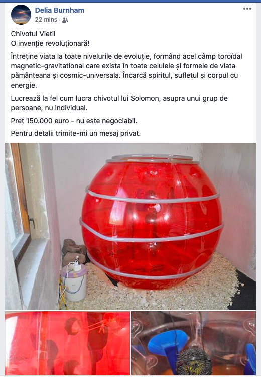

Chivotul Vieții
by Adrian Harabulă on 18 January, 2020
Astăzi am văzut că a fost făcut public chivotul vieții, un dispozitiv ce l-am încercat curând. Un om trecut prin viață se confruntă cu diverse stresuri, oboseli și uzuri care mai devreme sau mai târziu îl consumă. Deseori din cauza acestor dezechilibre apar și bolile și omul încet încet se duce. Chivotul reface și readuce la nivel energetic corpul la starea lui naturală pentru a funcționa în parametri optimi.
E o cămăruță mică amenajată în care e așezat chivotul. La o ședință se intră în grup, cam 6 persoane, dar minim 3. Ședința durează 40 minute, sau atât era când am fost eu, posibil să se mai schimbe între timp. Pe durata ședinței, stai liniștit, relaxat, în poziție de meditat și ești atent la tine. În funcție de ce are nevoie corpul, el își va lua energia necesară pentru a se echilibra. Efectele se văd în timp, dar și imediat. Sunt nu neapărat efecte evidente dar și subtile, poate dormi mai bine, poate ești mai relaxat, poate ai mai multă energie să abordezi problemele de zi cu zi.
Nu am cum să dau prea multe detalii tehnice, că nu prea mă pricep, dar se pot obține de la Delia pentru cine ar fi interesat să afle mai multe.
Deși dispozitivul nu ar fi accesibil pentru mulți, la prețul inițial de 150.000E, nu e nevoie să îl iei la tine acasă... Inventatorii pun pe primul loc sănătatea oamenilor, așa că pentru cine are nevoie sigur se va găsi o cale să ajungă fără să fie problemă de bani, doar omul să fie deschis să încerce.
Întreaga postare cu toate detaliile și comentariile ulterioare despre dispozitiv, se poate urmări aici.
